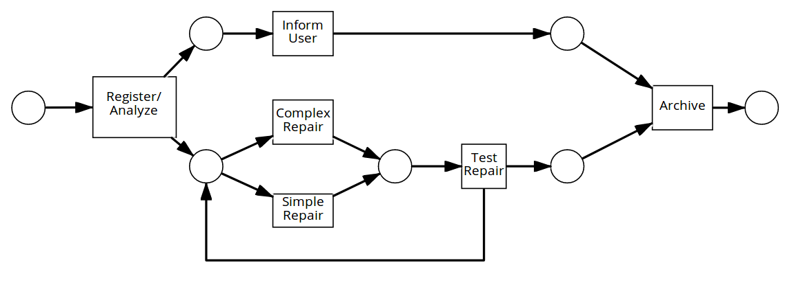
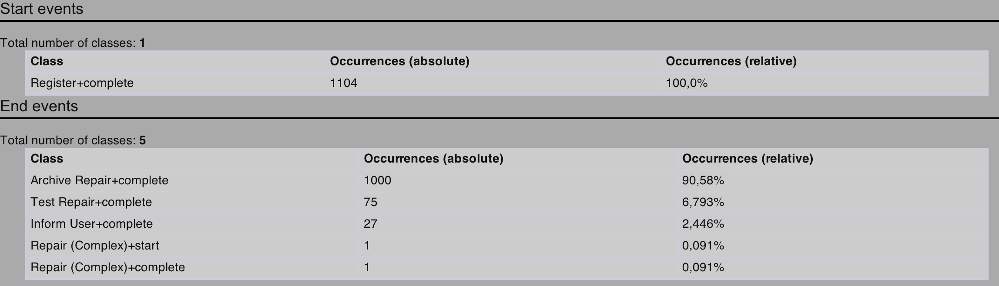
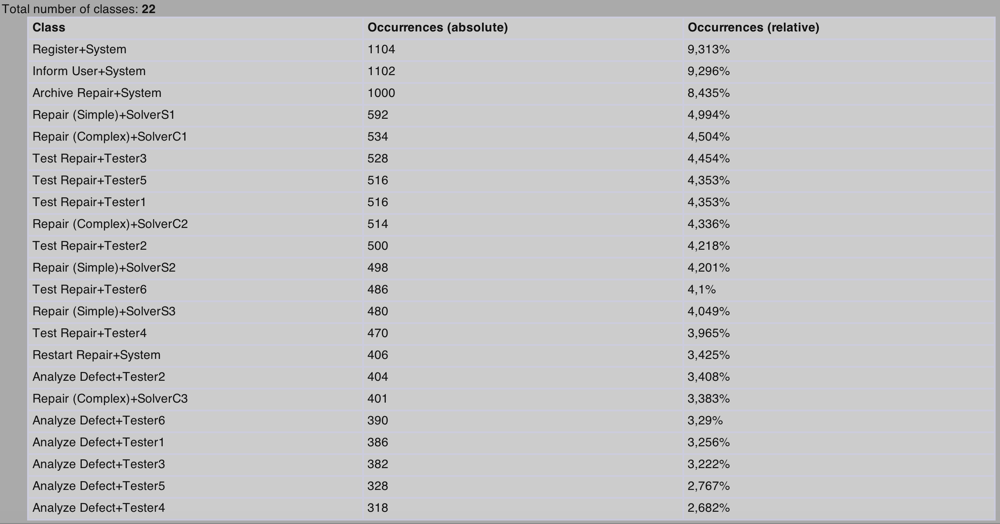
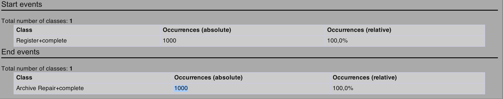
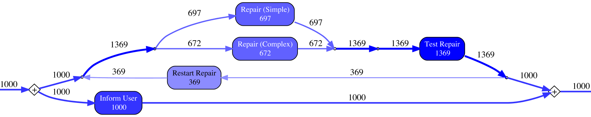
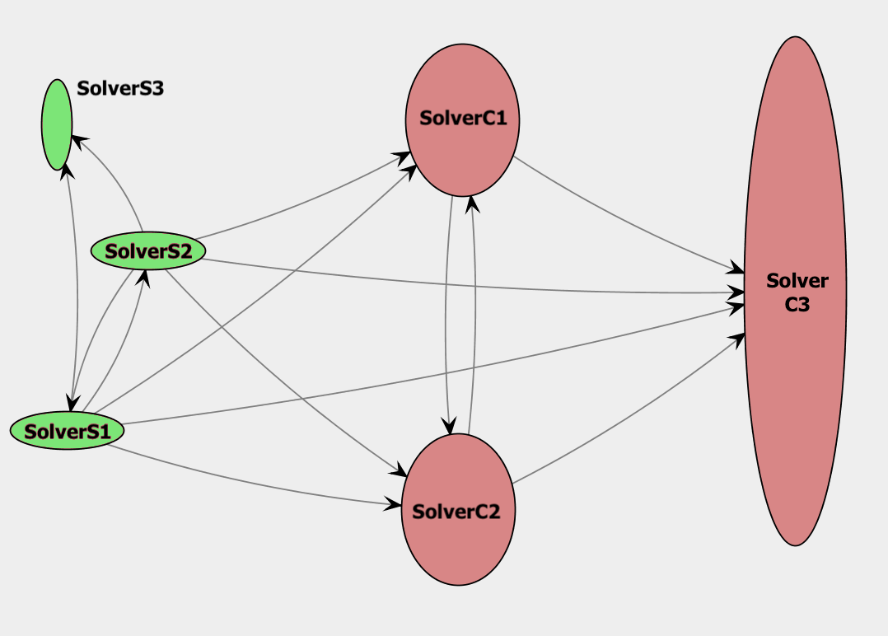

layout: true name: header_and_banner <img src="https://upload.wikimedia.org/wikipedia/commons/0/0a/Hawhamburg-logo.svg" class="logo"> <img src="assets/haw_banner.png" class="banner"> --- class: middle <h1 align="center"> Mining an cellphone repair process using ProM 6.7 </h1> <p align="center"> <div align="center" style="line-height: 35px; margin-top: 100px;"> Benedict Heidmeyer<br> Niclas Jensen<br> Fabian Schimke<br> </div> </p> --- ## Agenda <div style="line-height: 200%; font-size: 1.5em;"> 1. Introduction <br> 2. Inspecting Event Log <br> 3. Cleaning Event Log <br> 4. Mining the Control-Flow Perspective <br> 5. Mining Case-Related Information <br> 6. Mining Organizational-Related Information </font> --- ## 1. Introduction  --- template: header_and_banner layout: true ## 2. Inspecting Event Log --- <ul class="my-list" style="padding-top: 20px"> <li>How many cases (or process instances) are in the log? </li> <li>How many tasks (or audit trail entries) are in the log? </li> <li>How many resources are in the log?</li> <li>Are there running cases in the log?</li> <li>Which resources work on which tasks?</li> </ul> --- How many cases (or process instances) are in the log? --- How many tasks (or audit trail entries) are in the log? --- How many resources are in the log? --- Are there running cases in the log?  --- Which resources work on which tasks?  --- layout: false template: header_and_banner ## 3. Cleaning Event Log Before (without filter) After (with filter)  --- layout: false template: header_and_banner ## 4. Mining the Control-Flow Perspective How are the cases actually being related?  --- layout: false template: header_and_banner ## 5. Mining Case-Related Information What are the most frequent paths in the process? What is the distribution of all cases over the different paths through the process?  --- template: header_and_banner layout: true ## 6. Mining Organizational-Rel. Information --- <ul class="my-list"> <li>How many people are involved in a case?</li> <li>What is the communication structure and dependencies among people?</li> <li>How many transfers happen from one role to another role?</li> <li>Who are the important people in the communication flow?</li> <li>Who subcontract work to whom?</li> </ul> --- <div style="display: block; margin-left: auto; margin-right: auto; width: 90%;"> How many people are involved in the case Repair?  </div> --- <div style="display: block; margin-left: auto; margin-right: auto; width: 90%;"> What are the dependencies among the solvers? </div> --- <div style="display: block; margin-left: auto; margin-right: auto; width: 90%;"> How many transfers happen from one role to another? </div> --- <div style="display: block; margin-left: auto; margin-right: auto; width: 90%;"> Who are important people in the communication flow? </div> --- <div style="display: block; margin-left: auto; margin-right: auto; width: 90%;"> Who subcontract work to whom? </div>